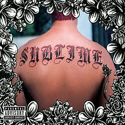

Garden Grove We took this trip to Garden Grove It smelt like Lou Dog inside the van, oh yeah This ain't no funky reggae party, five dollars at the door It gets so real sometime, who wrote my rhyme? I've got the microwave, got the VCR I got the deuce-deuce in the trunk of my car, oh yeah If you only knew all the love that I've found It's hard to keep my soul on the ground You're a fool Don't fuck around with my dog All that I can see, I steal; I fill up my garage 'Cause in my mind Music from Jamaica, all the love that I found Pull over, there's a reason why my soul's unsound It's you It's that shit stuck under my shoe It's that smell inside the van It's my bed sheet covered with sand Sitting through a shitty band Getting dog shit on my hands Getting hassled by the man Waking up to an alarm Sticking needles in your arm Picking up trash on the freeway Feeling depressed every day Leaving without making a sound Picking my dog up at the pound Living in a tweeker pad Getting yelled at by my dad Saying I'm happy when I'm not Finding roaches in the pot All these things I do They're waiting for you Madness... What i got I don't wanna fuck you, you can't even sing Early in the morning, rising to the street Light me up that cigarette and I'll strap shoes on my feet Got to find the reason, reason things went wrong Got to find the reason why my money's all gone I got a dalmatian and I can still get high I can play the guitar like a motherfucking riot Well, life is (Too short), so love the one you got 'Cause you might get run over or you might get shot Never start no static, I just get it off my chest Never had to battle with no bulletproof vest Take a small example, take a ti-ti-ti-tip from me Take all of your money, give it all to charity-ty-ty-ty Love is what I got, it's within my reach And the Sublime style's still straight from Long Beach It all comes back to you, you're bound to get what you deserve Try and test that, you're bound to get served Love's what I got, don't start a riot You'll feel it when the dance gets hot Loving is what I got I said, remember that Loving is what I got And remember that Loving is what I got I said, remember that Loving is what I got (I got, I got, I got) Why I don't cry when my dog runs away I don't get angry at the bills I have to pay I don't get angry when my mom smokes pot Hits the bottle and goes right to the rock Fucking and fighting; it's all the same Living with Louie Dog's the only way to stay sane Let the loving, let the loving come back to me 'Cause loving is what I got I said, remember that Loving is what I got And remember that Loving is what I got I said remember that Loving is what I got (I got, I got, I got) We're not that far off So that's— See, but— Yeah, we're done there Wrong Way Annie's twelve years old, in two more, she'll be a whore Nobody ever told her it's the wrong way Don't be afraid with the quickness you get laid For your family, get paid, it's the wrong way I gave her all that I had to give I'm gonna make it hard to live Salty tears running down to her chin And it ruins up her make-up and never wan' give A cigarette pressed between her lips But I'm staring at her tits, it's the wrong way Strong if I can, but I am only a man So I take her to the can, it's the wrong way The only family that she's ever had Is her seven horny brothers and a drunk-ass dad He needed money, so he put her on the street Everything was going fine, until the day she met me Happy are you sad, wanna shoot your dad? I'll do anything I can, the wrong way We talk all night, tried to make it right Believe me, shit was tight, it was the wrong way Don't run away, if you wanna stay 'Cause I ain't here to make you, oh, no It's up to you what you really want to do Spend some time in America Dub style! She'll give you all that she's got to give But I'm gonna make it hard to live Big, salty tears rolling down to her chin And it smears up her make-up an' never wan' give So, we ran away and I'm sorry when I say That straight to this very day it was the wrong way She did the hike, don't matter if I like it, or not Because she only wants the wrong way I gave her all that I had to give She still wouldn't take it, whoa, no Her two brown eyes are leaking like a sieve And it still ruins her make-up, and never wan' give Same In The End Down in Mississippi, where the sun beats down from the sky They give it up, and they give it up, and they give it up but they never ask why Daddy was a rollin', rollin' stone He rolled away one day and he never came home It ain't hard to understand This ain't Hitler's master plan What it takes to be a man Ooh, in my mind, in my brain I roll it over like a steamin' freight train It ain't hard to ascertain You only see what you want to believe When you light up in the back with those tricks up your sleeve That don't mean I can't hang Day that I die will be the day that I Shut my mouth and put down my guitar Sunday morning, hold church down at the bar Get down on your knees and start to pray, oh Pray my itchy rash will go away, ow Back up y'all, it ain't me Kentucky Fried Chicken is all I see It's a hella fine way to start your day If I make you cry all night Me and daddy gonna have a fist fight It ain't personal, it ain't me I only hear what you told me to be I'm a backward-ass hillbilly, I'm Dick Butkus You know I lie, I get mean I'm a thief in the dark, I'm a ragin' machine I'm a triple-rectified-ass son of a bitch Rec-tite on my ass and it makes me itch I can see for miles, and miles, and miles, oh My broken heart makes me smile In my mind, in my brain I go back, I go completely insane It ain't personal, it ain't me If I make you cry, I might Be your daddy at the end of the night Take a load from my big gun You only see what you want to believe When you creep from the back, I got tricks up my sleeve 24/7, devil's best friend Makes no difference, it's all same in the end April 29th, 1992 (Miami) "I don't know if you can but can you get an owner for Ons, that's O-N-S, Junior Market? The address is 1934, East Anaheim All the windows are busted out, and it's like a free-for-all in here And, uh, the owner should at least come down here And see if he can secure his business, if he wants to" April 26th, 1992 There was a riot on the streets, tell me, where were you? You were sitting home watching your TV While I was participatin' in some anarchy The first spot we hit it was my liquor store I finally got all that alcohol I can't afford With red lights flashing, time to retire And then we turned that liquor store into a structure fire Next stop we hit it was the music shop It only took one brick to make that window drop Finally, we got our own P.A. Where do you think I got this guitar that you're hearing today? Hey! "Call fire and tell them to respond at a Mobil station Alamitos and Anaheim It's, uh, flamin' up good" "10-4, Alamitos and Anaheim" Homicide, never doin' no time When we returned to the pad to unload everything It dawned on me that I need new home furnishings So, once again, we filled the van until it was full Since that day, my living room's been much more comfortable 'Cause everybody in the hood has had it up to here It's getting harder, and harder and harder, each and every year Some kids went in and stole with their mother I saw her when she came out, she was getting some Pampers They said it was for the black man They said it was for the Mexican, and not for the white man But if you look at the street, it wasn't about Rodney King And this fucked up situation, and these fucked up police It's about coming up and stayin' on top And screamin', "187 on a motherfuckin' cop" It's not in the paper, it's on the wall National Guard, smoke from all around! (Bo, bo, bo!) "Units, units be advised there's an attempt 211 to arrest now at 938 Temple, 9-3-8 Temple 30 subjects with bats, trying to get inside the CB's house He thinks they're gonna start to tryin' to kill him" (As long as I'm alive, I'ma live illegal) Let it burn, wanna let it burn Wanna let it burn, wanna, wanna let it burn (I'm feelin' sad and...) Riots on the streets of Miami Woah, riots on the streets of Chicago On the streets of Long Beach And San Francisco (Boise, Idaho) Riots on the streets of Kansas City (Salt Lake, Huntington Beach, California) Tuscaloosa, Alabama (Arcada, Clarkston, Michigan) Cleveland, Ohio Fountain Valley (Texas, Barstow - Let's do this every year) Paramount, Victorville (Twice a Year) Eugene Oregon, Eureka California (Let it burn, let it burn) Hesperia (Won't ya let it burn, won't'cha, won't'cha let it burn?) Santa Barbara, Winnemucca, Nevada (Let it burn) Phoenix, Arizona San Diego, Lakeland Florida (Won't you let it burn?) Fuckin Twentynine Palms (Won't you let it burn? Let it burn) "Any units assist, try Frank 54 Willow at Canton Ave Structure fire, and numerous subjects looting" "10-15 to get rid of this looter" "10-4" Santeria I don't practice Santeria, I ain't got no crystal ball Well, I had a million dollars, but I'd, I'd spend it all If I could find that jaina and that Sancho that she's found Well, I'd pop a cap in Sancho and I'd slap her down What I really wanna know, ah, baby, mmm What I really want to say, I can't define Well, it's love that I need, oh My soul will have to Wait 'til I get back, find a jaina of my own Daddy's gonna love one and all I feel the break, feel the break, feel the break, and I got' live it up Oh, yeah, ah-huh, well, I swear that I What I really wanna know, ah, baby What I really want to say, I can't define That love, make it go My soul will have to Mm, what I really wanna say, ah, baby What I really wanna say is, "I've got mine And I'll make it, oh yes, I'm comin' up" Tell Sanchito that If he knows what is good for him, he best go run and hide Daddy's got a new .45 And I won't think twice to stick that barrel straight down Sancho's throat Believe me when I say that I got something for his punk ass What I really wanna know, my baby Ooh, what I really wanna say is, "There's just one" Way back, and I'll make it, oh yeah I'm coming up My soul will have to wait yeah Yeah, yeah, yeah Jailhouse Go! And I won't give it up to you And I feel love, feel love, love, love Jailhouse gets empty Rudy gets plenty The baton stick gets shorter Rudy gets taller 'Em fight against the youth 'Cause we're strong Them are rude, rude people Can't fight against the youth 'Cause we're strong 'Em are rude, rude people Now, when I was a youth in 1983 It was the best day of my life Had the '89 vision, we didn't fuss or no fight When all the little daughters wanna be my wife A vision, it was playin' on my guitar, on my guitar I had to be there, I had to be there I had to be there, I had to be there And the rhythm playin' I know that I'm gonna be there, yeah Bud Gaugh will be singing there And Eric Wilson will be bangin' out there, yeah And we'll be all singin', with version, with version Reggae version, version, version, version, oh Oh! What has been told to the wise and up-rooted? Yeah It's gonna be revealed unto you babes, and Sublime Rudy, Rudy, Rudy Can't fight against the youth Right now, them are rude, rude people Can't fight against the resistance Oh, right now, 'em are rude, rude people We gonna rule this land among children We gonna rule this land 'Cause when that rhythm, it was playin' on my guitar, on my guitar I had to be there, I had to be there I had to be there, I had to be there Oh, when I was a youth, it was the best day It was the best day of my life We had the '89 vision, we didn't fuss or no fight When all the little daughters wanna be my wife When that rhythm, it was playin' on my guitar, on my guitar I had to be there, I had to be there I had to be there, I had to be there, I had to be there Had to be there Jailhouse gets empty And Rudy gets plenty Baton stick gets shorter Rudy gets taller, taller 'Em fight against the youth 'Cause we're strong Them are rude, rude people Can't fight against the youth Pawn Shop Down there at the pawn shop, it's the way-only way to shop Down there at the pawn shop, if it's not in stone Down there at the pawn shop, it no way, no way to shop Down there at the pawn shop What has been told Albino made of stone Just remember that it's flesh and bone So, why I'm down here at the pawn shop Down here at the pawn shop Down here at the pawn shop Down here at the pawn shop What has been sold Not strictly made of stone Just remember that it's flesh and bone And I have heard Light like a bird, yeah But just remember that it's flesh and bone So, why I'm down here at the pawn shop Down here at the pawn shop (Go!) (Right!) (Uh, that's right...) Down here at the pawn shop, it's a new fair way to shop Down here at the pawn shop, it's another sold Down here at the pawn shop, it's an "if, you never" shop Down here at the pawn shop What has been sold Not strictly made of stone Just remember, it's flesh and bone What has been sold Not strictly soul Please remember, it's flesh and bone Why I'm down here at the pawn shop Down here at the pawn shop Down here at the pawn shop Down here at the pawn shop-yop-yop Uh, ooh (Uh!) Sing Paddle Out I never thought that when I grew up I would be in a band And travel all the best spots in the land And I'm not here to brag or boast I'm here to tell you about the spots that I love the most Natural Bridges on a clean west swell Breaks over the reef like a bat out of hell Stockton Avenue gets hollow and mean And on a big day, it works like a machine Outside Stockton gets hot like a glove Swift Street, John Street, into Mitchell's cove Big Steamer Lane makes you wish you were a trout When it's smackin' so hard, only two dudes paddle out A huge summertime south swell hits when I'm in my hometown Outside on a surf side bowl is where I can be found Up and down the coast Checkin' out the spots that I love the most The Ballad Of Johnny Butt Johnny Butt was a man with a real strong will to survive He'd just keep pushin' on, even though he was barely alive So, shoot it up, shoot it up, it just don't matter Johnny says he wants to go do it, says he wants to kill a cop We've got a brand new dance, it's called we've got to overcome We've got a brand new dance, it's called we've got to overcome So, Johnny just keep pushin', 'cause the, the streets are yours There'll come a day when all that shit won't matter So, shoot it up, shoot it up, it just don't matter When you're resisting anyway We've got a brand new dance, it's called we's gots to overcome We've got a brand new dance, it's called we've got to overcome So, Johnny, he kept on pushin', the streets are yours There'll come a day when all of that shit won't matter So, shoot it up, shoot it up, it just don't matter Resisting anyway We've got a brand new dance, it's called we've got to overcome We've got a brand new dance, it's called we've got to overcome Burritos I don't want to go and party I don't want to shoot the pier I don't wanna take the doggy for a walk I don't want to look at naked chicks and drink beer I don't want to do a bong load And go and wrench on the car I don't want to hose the dog shit down 'Cause I ain't even gonna get out of bed I ain't gettin', I ain't gettin' out of bed today I ain't gettin', I ain't gettin' out of bed today Keep on skankin', Ronnie Skank the night away But the time is coming for us all to pay, hey I don't want to watch no porno And I don't want to play guitar I don't want to spank the monkey I don't want to go down to the corner bar And I ain't even gotta listen To all the stupid shit you got to say I don't want to do a god damn thing I don't wanna, wanna leave my bed today I don't want, I don't wanna leave my bed today I don't want, I don't wanna leave my bed today Hey, hey, hey, hey, hey, hey Keep on skankin', Ronnie Skank the night away But the time is coming for us all to pay I don't wanna eat burritos Or read about O.J. No, I don't want to get a head rush 'Cause I ain't even gettin' out of bed today I ain't gettin', I ain't gettin' out of bed today I ain't gettin', I ain't gettin' out of bed today I ain't got to leave my bed, today No, no, no, no, no, no No way, no way, no way No, way Keep on skankin', Ronnie Skank the night away But the time is coming for us all to pay Under My Voodoo Being your guy is a monster habit And you can't hide your love, it's true It's the fetal game, you can see it every day Let your freedom hang free Come on down, I know how I'm gonna make you come clear Don't you know it ain't no thing to be for? So, don't take more than you need It's something that I'll do later Now, it's over my... It's under my voodoo Under my voodoo It's under my voodoo Pray that I leave you high and dry Pray you can magnify If your fated blood was in my prayers I damn well feel it I won't lie I'm tellin' the truth It ain't no fee, if you wanna get... (One thing, no more) (Gonna hit it, prolong it) (I've always known but...) (Fight for his country, won't he?) (Gone, gone, gone, gone) (Said, listen, but you gotta get your life) (God, God) Under my voodoo Under my voodoo It's under my voodoo Free Lord, God, voodoo Lord, hey, voodoo Lord, hey, voodoo What you wan', you wan', you wan', you wanna do? Lord Wanna, wanna, wanna pack up I wanna get to Peek-A-Boos Right! Now Get Ready Alright Come on Some folks say that smokin' herb is a crime If they catch you smokin', they're bound to drop the dime Insufferable informer crazy fools Wait with their fingers crossed for you to break the rules And in the evening, we try to jam We like our music loud, in this here band We let the bass line drop as loud as we can stand Somebody always gotta turn informer for the man I want to know, know right now Is it one of you in the crowd? Are you gonna call 9-1-1, and spoil all of my fun? You crazy fools I'm in the mood, get ready I'm in the mood Come on now, yeah I'm in the mood, are you ready? I'm in the mood Come on now, yeah Come on an' Load up the bong, crank up the song Let the informer call 9-1-1 Load up the bong, crank up the song Let the informer call 9-1-1 And when security police force g'won arrive Don't try to run, don't try to hide Just pull out the .9, pop in the clip Puh, and let one slip Into these crazy fools I'm in the mood, get ready I'm in the mood Come on now, yeah I'm in the mood, are you ready? I'm in the mood Come on now, yeah And in the evenin', when we try to jam We like the music loud, in this here band Oh, I wanna know now, I wanna know, know right now Are you willing, are you willin' and able? Oh, got the crazy fool Some folks say that smoking herb is a crime If they catch you smokin', they're bound to drop the dime Insufferable informer crazy fools Wait with their fingers crossed for you to break the rules But I'm in the mood, get ready I'm in the mood Come on now, yeah I'm in the mood, are you ready? I'm in the mood Come on now, yeah I'm in the mood, get ready I'm in the mood Come on now, uh! Caress Me Down Mucho gusto, me llamo Bradley I'm hornier than Ron Jeremy And if you wanna get popped in your knee Just wipe that look off your batty face You hate me 'cause I got what you need A pretty little daughter that we call, "Mexi" If you wanna get beat physically It will be over in a minute if ya... So, she told me to come over and I took that trip And then she pulled out my mushroom tip And when it came out, it went, drip-drip-drip I didn't know she had the G.I. Joe kung-fu grip And it went, "uh", and the girl caress me down "Uh", and that's that loving sound And it went, "uh", and the girl caress me down "Uh", and that's that loving sound When I kiss Mexi, she makes me feel horny 'Cause I'm the type of lover with the sensitivity When she kiss my neck and tickle me fancy She give me the right kind of lovin on' Sunday morning En otro lado, es donde viví Con mijita, que se llama, "Mexi" Y su hermana, sí me quiere Y ahorita, tenemos un bebé Sus padres, sus tíos, me trataron matar But they did not get too far Un poco después tuve que regresar Con un chingo de dinero, 'cause you know I'm a star Yo fui a Costa Rica para tomar y surfear Platicaba con la raza, 'cause they know who we are Si no me dió cuenta than I bet you never will You must be a muñeca if you're still standing still And we ball, "uh", the girl caress me down "Uh", and that's the loving sound We go, "uh", and the girl caress me down And that's the loving sound Me gusta mi reggae, me gusta punk rock Pero la cosa que me gusta más, es panochita Pon la nalga en el aire if you know who you are Pon la nalga en el aire, empieza gritar No tenga miedo, I'm your papí Take your chones y los manden a mí Levanta, levanta, tienes que gritar Levanta, levanta, tienes que bailar Because, "uh", the girl caress me down "Uh", and that's the loving sound "Uh", and the girl caress me down That's the loving sound "Uh", caress me down "Uh", that's the lovin' sound "Uh", and the girls caress me down That's the loving sound What I Got (Reprise) Early in the morning, rising to the street Light me up that cigarette and I'll strap shoes on my feet Got to find a reason, reason things went wrong Got to find a reason why my money's all gone I got a Dalmatian, I can still get high I can play the guitar like a motherfuckin' riot Life is too short so love the one you got 'Cause you might get run over, or you might get shot Never had to battle with my bullet-proof vest Never start static, I get that off my chest Take a small example, a tip from me Take all of your money, give it all to charity-ty-ty-ty Love's what I got within my reach And the Sublime style's still straight from Long Beach It comes back to you, you gonna get what you deserve Try and test that, you're bound to get served Love's what I got, don't start a riot You feel it when the dance gets hot, hot Lovin' is what I got I said, remember that Lovin' is what I got I said, remember that Well, I don't cry when my dog runs away I don't get angry at the bills I have to pay I don't get angry when my mom smokes pot Hits the bottle and goes right to the rock Fuck it or fight it, it's all the same Livin' with Louie Dog's the only way to stay sane Let the lovin', let the lovin' come back to me Lovin' is what I got I said, remember that Lovin' is what I got I said, remember that Lovin' is what I got I said, remember that Lovin' is what I got I said, remember that Lovin' is what I got I said, remember that Lovin' is what I got I said, remember that Lovin' is what I got I said, remember that Lovin' is what I got I said, remember that I got, I got, I got, I got Doin' Time Summertime, and the livin's easy Bradley's on the microphone with Ras M.G. All people in the dance will agree that we're Well qualified to represent the L.B.C. G, me and Louie, we gon' run to the party Dance to the rhythm, it gets harder (And we can do it like this, in the place to be) Me and my girl, we got this relationship I love her so bad, but she treats me like sh... On lockdown, like a penitentiary She spreads her lovin' all over and when she gets home, there's none left for me Summertime, and the livin's easy Bradley's on the microphone with Ras M.G. All people in the dance will agree that we're Well qualified to represent the L.B.C. G, me and Louie, we gon' run to the party Dance to the rhythm, it gets harder (And we can do it like this, in the place to be) Oh, take this veil from off my eyes My burning sun will some day rise So, what am I gonna be doin' for a while? Said, I'm gonna play with myself Show them, now, we've come off the shelf (So what?) Summertime, and the livin's easy Bradley's on the microphone with Ras M.G. All people in the dance will agree that we're Well qualified to represent the L.B.C. G, we and Louie, run to the party Dance to the rhythm, it gets harder (And we can do it like this, in the place to be) Evil, I've come to tell you that she's evil, most definitely Evil, ornery, scandalous and evil, most definitely The tension, it's getting harder I'd like to hold her head underwater Me and my girl, we've got a relationship Me and my girl, mm, we got a relationship, mm-hmm My girl, we got a relationship, oh And my girl, yeah, got a relationship Take a tip, take a tip Take a ti-ti-ti-tip from me Bradley's on the microphone with Ras M.G. All people in the dance will agree that we're Well qualified to represent the L.B.C. Me, la-la-Louie While everybody run to the rhythm, it gets harder (And we can do it like this, in the place to be) Summertime, and the livin's easy (And we can do it like this, in the place to be)